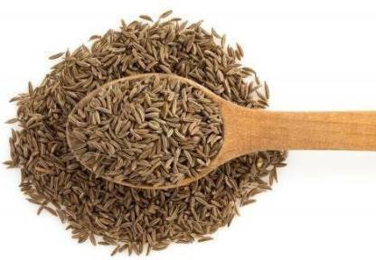
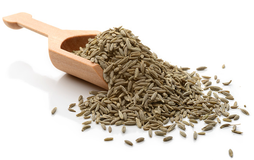
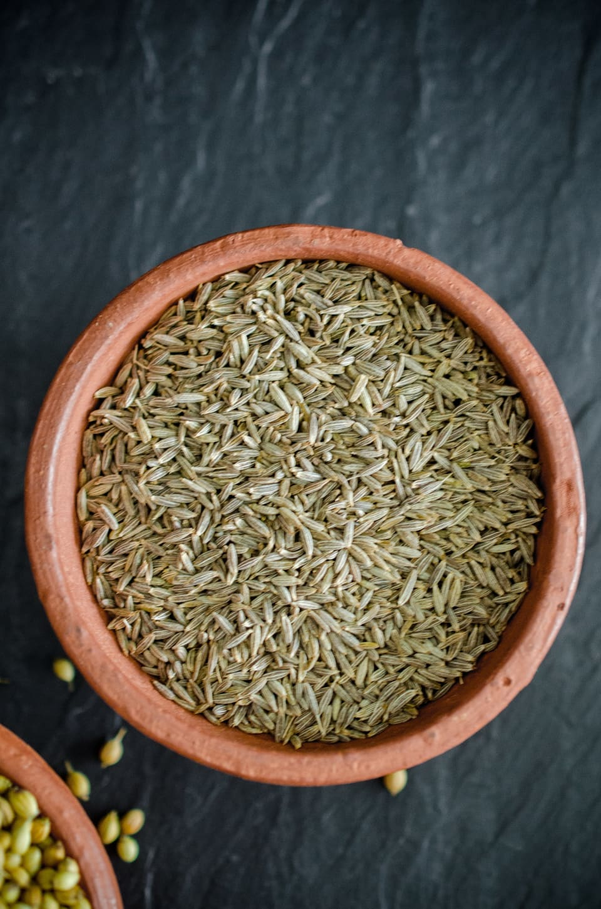

saraswati speices
CUMIN



Cuminum is a flowering plant in the family Apiaceae,native to theIrano-Turanian Region
Its seeds – each one contained within a fruit,which is dried – are used in the cuisines
of many cultures in both whole and ground form.Although cumin is thought to have uses in
traditional medicine,there is no high-quality evidence that it is safe or effective
as a therapeutic agent.